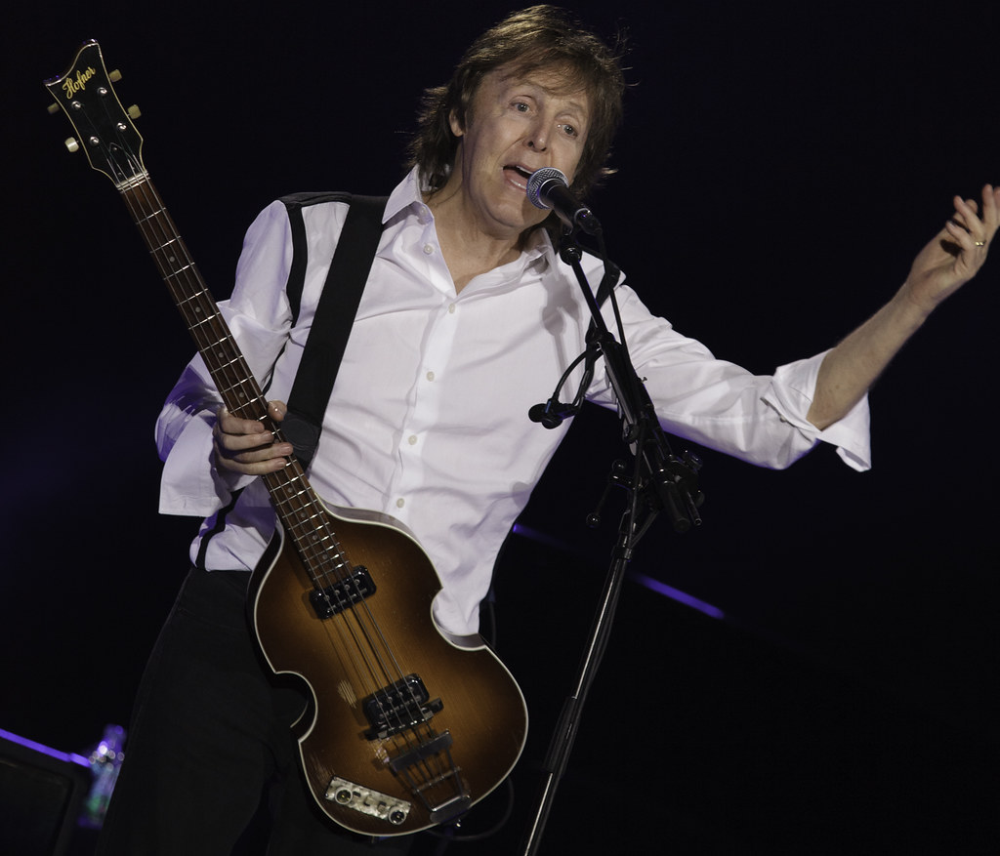
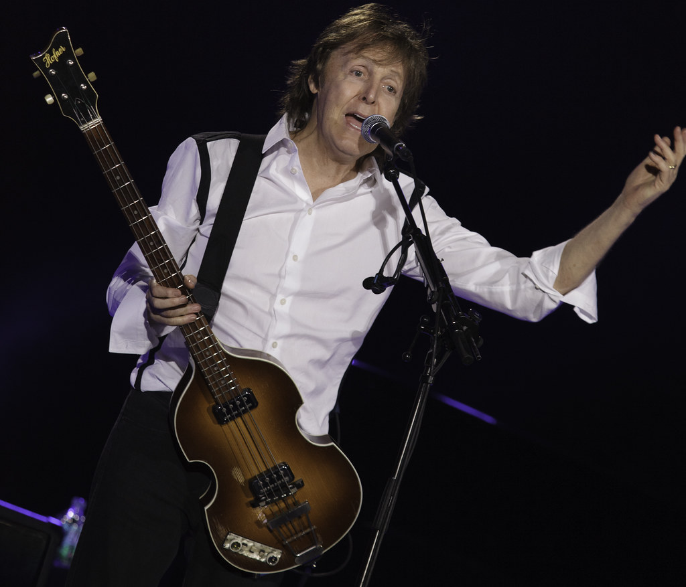

PAUL MCCARTNEY NO BRASIL
Veja data dos shows
A MELHOR BANDA DA HISTÓRIA
Veja data dos shows
Será que ele não vai fazer show no dia 8 de Dezembro por causa do aniverário da morte do John Lennon? 🤔
Objetos dos Beatles devem arrecadar mais de R$ 29 milhões em leilão nos EUA
Fãs lançam projeto para encontrar baixo desaparecido de Paul McCartney
A curiosa música menos tocada dos Beatles no Spotify
Mãe de George Harrison ficava 'enojada' com gritos de fãs
Documentário inédito sobre os Beatles estreia na TV
1961: Os Beatles fazem show no Cavern Club
1962: Gravam: PS I Love You, Love Me Do, Please Please Please Me
1963: Gravam: I Wanna Be Your Man
1964: Show em Gator Bowl, Jacksonville
1967: Filmam o fime Magical Mystery Tour
1968: Gravam Glass Onion